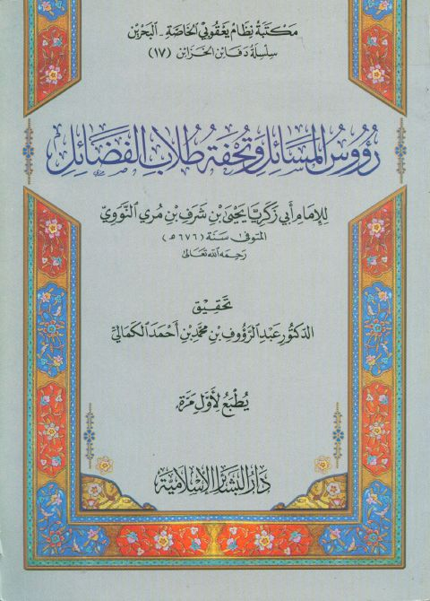

Downloads need an internet connection.
رؤوس المسائل وتحفة طلاب الفضائل
Authors: يحيى بن شرف النووي
Editors: عبد الرؤوف محمد أحمد الكمالي
Publishers: دار البشائر الإسلامية
**▫️ العنوان: رؤوس المسائل وتحفة طلاب الفضائل** ▪️ المؤلف: #يحيى_بن_شرف_النووي ▫️ المحقق: #عبد_الرؤوف_محمد_أحمد_الكمالي ▪️ الناشر: #دار_البشائر_الإسلامية ▫️ تاريخ النشر: 1428هـ 2007 م ▪️ بلد النشر: بيروت، #لبنان ▫️ الطبعة: 1 ▪️ عدد الأجزاء: 1 ▫️ الصفحات: 129 ▪️ نوع الوعاء: #كتاب ▫️ التصنيف الرئيسي: #الفقه_وأصوله ▪️ التصنيف الفرعي: #الفتوى ۪